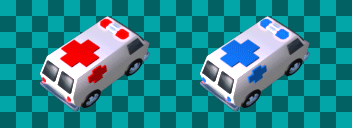

sprite_replace_color_blend
WARNING: This script is already slow but a bug in GameMaker:Studio makes it pretty much unusable. The sprite below took 46 minutes to process. It should have taken about 30 seconds.

This script can replace one range of colors with another while preserving overall shading. It is slow. VERY SLOW. It is only suitable for small sprites with few frames. It is probably far too slow to be used in your game. But it does have its uses.
This same functionality can be performed in real-time with a shader. This shader has not yet been posted here but you can see the shader at the GMC.
NOTE: A much faster script for color replacement (without color blending) is sprite_replace_color().
- sprite_replace_color_blend(sprite,oldcolor,newcolor,htol,stol,vtol,blend)
- Replaces one range of colors of a given sprite with another.
/// sprite_replace_color_blend(sprite,oldcolor,newcolor,htol,stol,vtol,blend)
//
// Replaces one range of colors of a given sprite with another.
// No new sprites are created, the original sprite is changed.
// Color is matched and replaced using tolerances and blending
// in order to preserve the shading of the original sprite.
//
// sprite sprite index, real
// oldcolor original color, real
// newcolor replacement color, real
// htol hue tolerance, real
// stol saturation tolerance, real
// vtol value tolerance, real
// blend blend shading, true/false
//
//
// Notes:
// This script is extremely slow, especially with large sprites
// or sprites with many frames.
//
// Three tolerance arguments (htol,stol,vtol) contol exactly
// which colors are replaced. A higher tolerance will match
// a broader range of hue, saturation, or value. Values
// around (htol = 20; stol = 240; vtol = 240) work well.
//
// If (blend) is set to true (recommeded), changed colors
// will retain their original shading.
//
/// GMLscripts.com/license
{
var sprite,oldcolor,newcolor,trancolor,htol,stol,vtol,blend;
sprite = argument0;
oldcolor = argument1;
newcolor = argument2;
htol = argument3;
stol = argument4;
vtol = argument5;
blend = argument6;
var xo,yo,n,w,h,oh,os,ov,nh,ns,nv;
var surf,i,sx,sy,color,th,ts,tv,dh,ds,dv,hue,sat,val,newsprite;
xo = sprite_get_xoffset(sprite);
yo = sprite_get_yoffset(sprite);
n = sprite_get_number(sprite);
w = sprite_get_width(sprite);
h = sprite_get_height(sprite);
oh = color_get_hue(oldcolor);
os = color_get_saturation(oldcolor);
ov = color_get_value(oldcolor);
nh = color_get_hue(newcolor);
ns = color_get_saturation(newcolor);
nv = color_get_value(newcolor);
// Create surf for sprite editing.
surf = surface_create(w,h);
surface_set_target(surf);
// Process each frame of the original sprite.
for(i=0; i<n; i+=1) {
draw_clear_alpha(c_black,1);
draw_set_blend_mode_ext(bm_one,bm_zero);
draw_sprite(sprite,i,xo,yo);
// Check each pixel and change it if within HSV color thresholds.
for(sx=0; sx<w; sx+=1) {
for(sy=0; sy<h; sy+=1) {
color = surface_getpixel(surf,sx,sy);
th = color_get_hue(color);
ts = color_get_saturation(color);
tv = color_get_value(color);
dh = th-oh;
ds = ts-os;
dv = tv-ov;
if (abs(dh)>128) dh = sign(dh)*256-dh;
if (abs(dh)<htol && abs(ds)<stol && abs(dv)<vtol) {
if (blend) {
hue = (nh+dh+256) mod 256;
sat = min(max(0,ns+ds),255);
val = min(max(0,nv+dv),255);
draw_point_color(sx,sy,make_color_hsv(hue,sat,val));
}
}
}
}
// Add current frame to new sprite.
if (i == 0) {
newsprite = sprite_create_from_surface(surf,0,0,w,h,false,false,xo,yo);
if (newsprite < 0) return -1;
}else{
sprite_add_from_surface(newsprite,surf,0,0,w,h,false,false);
}
// Copy alpha channel from original sprite to alpha sprite.
draw_clear_alpha(c_white,1);
draw_set_blend_mode_ext(bm_zero,bm_src_alpha);
draw_sprite(sprite,i,xo,yo);
if (i == 0) {
alphasprite = sprite_create_from_surface(surf,0,0,w,h,false,false,xo,yo);
if (alphasprite < 0) {
sprite_delete(newsprite);
return -1;
}
}else{
sprite_add_from_surface(alphasprite,surf,0,0,w,h,false,false);
}
}
// Replace original sprite with new sprite.
sprite_assign(sprite,newsprite);
// Apply original sprite alpha channel to new sprite.
sprite_set_alpha_from_sprite(sprite,alphasprite);
// Clean up.
draw_set_blend_mode(bm_normal);
surface_reset_target();
sprite_delete(newsprite);
sprite_delete(alphasprite);
surface_free(surf);
return 0;
}
Contributors: xot
GitHub: View · Commits · Blame · Raw